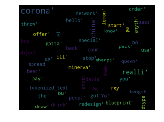
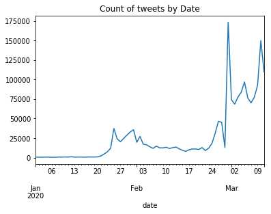
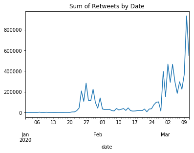
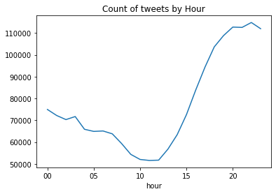
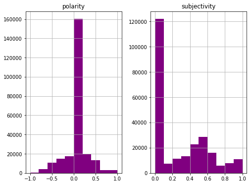

CoronaVirus(Covid19) Twitter Sentiment Analysis Project
Project Overview
This projects contains works fora personal project on analysis of tweets about CoronaVirus2019 outbreak. In this project, we have extracted tweets with Corona search key. Tweets were clustered and classified to delete Irrelevant tweets. An EDA and sentiment analysis using textblob were performed on dataset.Data Gathering
You can use dataGathering-twint.py script to gather tweets or use twint CLI command: twint -s corona -o output.csv --csv -l en --unt 2020-04-15 since 2020-01-01 the current tweet sample was gathered by twint CLI command. The used data set consists 1.8M tweets with 'corona' keyword since 2020/01/01 until 2020/03/11.Results

Exploratory Analysis
Number of Tweets: 1.853.096
Average of Retweets Count: 3.7
Count of Tweets by Date:

Count of ReTweets by Date:

Count of Tweets by hour:

Count of ReTweets by Hour:
Sentiment Analysis
Polarity and Subjectivity :

Daily Polarity LineChart :